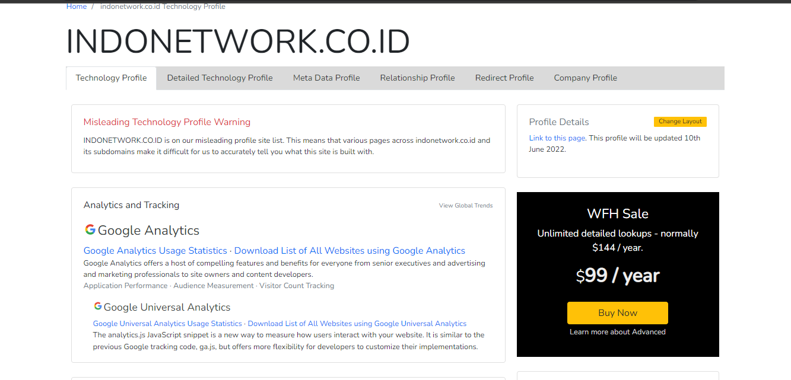

Indonetwork.co.id adalah situs dimana perusahaan perusahaan dapat memasarkan jasa atau barang daganganya, ataupun juga dapat membeli barang secara online. Semenjak lahir tahun 2001 indonetwork sudah mengantongi dengan jumlah anggota 200ribu dan 65ribu pengunjung tiap harinya dan bisa masuk kedalam kategori situs b2b terbesar di indonesia.
Banyak pengguna layanan indonetwork mengaku sangat puas setelah gabung dengan indonetwork, hal itu bisa ditunjukan dengan testimoni dari beberapa pengguna indonetwork di halaman kisah sukses indonetwork Link. ada banyak fitur setelah menjadi anggota indonetwork, seperti memiliki situs,memasukkan katalog, mengirim penawaran dll. ada juga tipe keanggotaan prioritas dan sms, yang mana kita bisa mendapatkan tampilan situs khusus, pemberitahuan via sms dll.
Mekanisme Jual Beli
Pada halaman awal akan disuguhkan dengan berbagai macam produk.
Setelah membuat akun dan melakukan login anda dapat memilih barang yang diinginkan.
Dalam transaksi indonetwork pengunjung akan diarahkan kepada kontak produk dari perusahaan terkait.
Mekanisme Distribusi
Mekanisme distribusi produk adalah tergantung dari perusahaan penyedia jasa atau produk.
Mekanisme Pembayaran
Setiap produk akan diarahkan kepada profil perusahaan pemilik produk untuk melanjutkan proses transaksi, sebagai contoh adalah berikut.
Teknologi yang digunakan Indonetwork
Berdasarkan dari website Builtwith berikut adalah teknologi yang digunakan Indonetwork.co.id.
